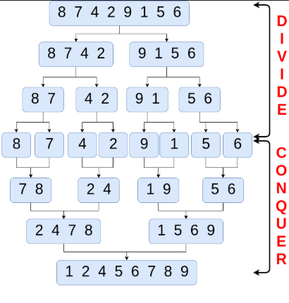

×
Merge Sort
class Solution(object):
def sortArray(self, nums):
"""
:type nums: List[int]
:rtype: List[int]
"""
if len(nums) == 1:
return nums
pivot = len(nums) // 2
left = self.sortArray(nums[:pivot])
right = self.sortArray(nums[pivot:])
result = []
i = j = 0
while i < len(left) and j < len(right):
if left[i] <= right[j]:
result.append(left[i])
i += 1
else:
result.append(right[j])
j += 1
result += left[i:]
result += right[j:]
return result
sol = Solution()
print(sol.sortArray([5,2,3,1]))
The recusrion breaks nums down to lists with 1 num inside and then after the recursion the code is run for each stack call to compare
sortArray([5,2,3,1])
LEFT
sortArray([5,2])
sortArray([5]) → returns [5]
sortArray([2]) → returns [2]
merge [5] and [2] → [2,5]
RIGHT
sortArray([3,1])
sortArray([3]) → returns [3]
sortArray([1]) → returns [1]
merge [3] and [1] → [1,3]
merge [2,5] and [1,3] → [1,2,3,5]

>> The final stage merge goes like this:
Step 0: Initial arrays
left = [2, 5]
right = [1, 3]
merged = []
Step 1: Compare 2 and 1 → take 1
merged = [1]
left = [2, 5]
right = [3]
Step 2: Compare 2 and 3 → take 2
merged = [1, 2]
left = [5]
right = [3]
Step 3: Compare 5 and 3 → take 3
merged = [1, 2, 3]
left = [5]
right = []
Step 4: Right empty → take remaining 5
merged = [1, 2, 3, 5]
no pivots
The array is split in half, recursively, and then merged.
We just talk about dividing and merging, not a pivot.